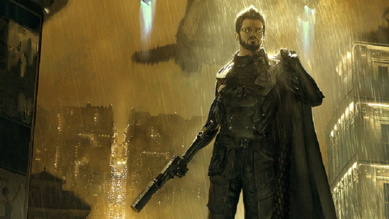
Серии Deus Ex повезло стать не только родоначальником жанра cyberpunk stealth immersive, но и во многом благодаря стараниям команды под началом Warren Spector и Sheldon Pacotti, дала жизнь таким не менее известным проектам как Cyberpunk 2077, Dishonored, Prey, Alpha Protocol и другим. Последние игры, именно что последние, потому что Embracer закрыли два проекта по вселенной в этом году, а права на IP ушли с молотка куда-то в сторону Activision, про «аугов» и «чистых» запомнились игрокам не только уникальным визуальным стилем в черно-золотых тонах, но и игровыми уровнями с большим числом «вертикальных» загадок, и свободным перемещением, где единственно правильным решением квестов будет то, которое выбрал игрок, доставят десятки часов увлекательного исследования игрового мира. Это конечно не откровения первого деуса, все-таки оригинал сложно превзойти, как по части механик, так и по сюжетным твистам. Но авторы продолжения смогли расширить игровые механики, не сломав по пути комбинаторику взаимодействия. В прошлой статье я рассказал про важность естественной архитектуры при создании уровней, так что давайте в этой больше уделим внимания мелочам и той самой комбинаторике механик, которая и является отличительной чертой серии. На относительно небольших уровнях задача «подружить» разнообразные, а зачастую блокирующие друг друга, игровые механики становится сродни пазлу, а на отладку и граничные кейсы у дизайнеров уходят месяцы фактической работы.
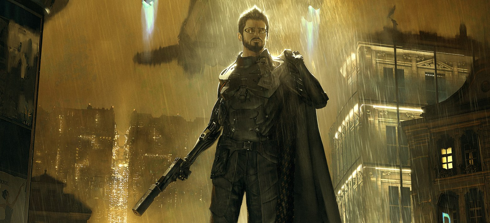
Procházím se po noční Praze v černých brýlích. Nejsem feťák, jsem kyborg
Причиной, что побудила меня написать статью об этой игре, стала новость о закрытии Eidos Montreal в январе этого года, а также отправлением на мороз двух игр по вселенной Deus Ex и продолжения Tomb Raider. Если вы думаете, что закрыть крупную студию, а подразделение на момент закрытия насчитывало порядка двухсот человек, можно быстро, то вы ошибаетесь. На закрытие такой крупной и известной студии уходит больше года, обычно еще за полгода до дня «Д» всем дается возможность найти другую позицию и расстаться по хорошему с вручением почетной грамоты и записью в трудовую... ой, контракт. На момент закрытия были уволены 97 человек, я так думаю это оставшийся небоевой персонал, вроде бухгалтеров, офис менеджеров, продаванов и джунов, которым надо было досидеть год, чтобы иметь строчку в резюме. Ну или старичков, которым важно было дождаться бонусов по опционам. Так что считайте сами, половина которая и была группой разработки свалила заметно раньше наступления doom day. Ну чтож, RIP как говорится, твои аугментации заберет кто-то другой (с).
Dawn Engine
Движок ведет свою родословную от дедушки Glacier, созданного датской IO Interactive, тогда еще просто студентами, еще в 1994 году, который используется во всех играх серии Hitman. В 2009 году Glacier (v3.3), был передан Eidos-Montreal, и дальше их развитие шло параллельно. Glacier стали развивать для коммерческого лицензирования, шоурумом которого стал перезапуск серии про лысого киллера, а Dawn Engine стал домашним для Адама Дженсена. Надо отметить, что там же в Монреале располагалось подразделение Square Enix (Eidos Montreal Labs), которое отвечало за исследование и инновации для всех студий группы. Я так понимаю, что ребята сидели если не за соседними столами, то как минимум в соседних опенспейсах. К моменту выхода DE:MD движок добрался до второй версии, опередив по технологиям родителя, что было в Dawn Engine и чего не было, а даже нет и сейчас в Glacier 2:
- Umbra 2 — технология, которая кеширует геометрию уровня и ускоряет отсечение невидимых поверхностей. Основными потребителями этой технологии были средства проектирования зданий и коммерческие симуляторы с высоким уровнем детализации, например в градостроении.
- PhysX 3.4 — последний на тот момент релиз физического движка.
- NVidia APEX — одна из первых игр, что использовала новую систему симуляции мягких поверхностей, жидкостей и газов. А также одна из первых игр, которая использовала «честную» (объемную) симуляцию газов в помещениях (только в ПК версии).
- Scaleform — весь пользовательский интерфейс в игре сделан в 3D, начиная от главного меню и заканчивая титрами. Под капотом живет старая как мир технология Flash, изгнанная было из веба, но все еще живая и здоровая как средство UI для игр.
- Nav Power (babelflux.com) — не смотрите что сайт из 90-х, на самом деле все еще одна из самых мощных и функциональных систем навигации и генерации navmesh для игр, то что сейчас есть нативное в Unreal Engine, на порядок хуже по функционалу. Для примера могу привести использование этой технологии в играх Guild Wars 2, The Division, Tomb Rider, Dragon Age, ну и моем текущем проекте тоже.
Ниже я приведу сводную таблицу редко показываемых характеристик движков в синтетическом тесте при отображении сцены c множеством уникальных объектов ~2млн полигонов. Скрин из iSotropix Clarisse iFX, который позволил процедурно нагенерить уникальные объекты, чтобы движок не мог это дело соптимизировать.
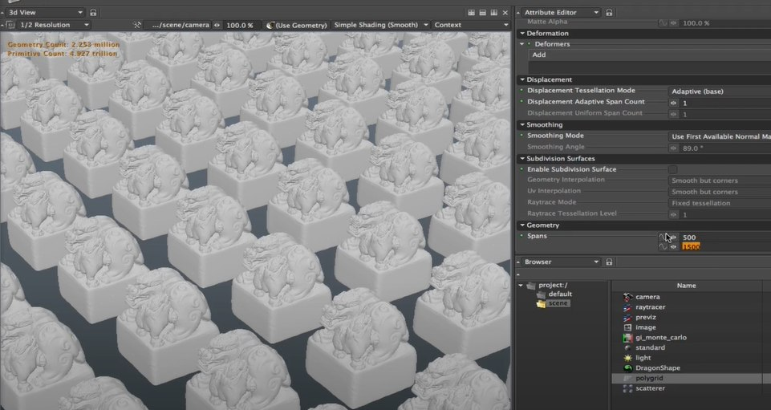
Значения счетчика gpu_idle — чем больше тем хуже для движка, это значит что программисты профилонили и GPU «отдыхал». С другой стороны, это задел на будущее, потому что это время можно отдать на какие-то другие задачи.
Значения vertex_shader_busy и pixel_shader_busy показывают сколько времени кадра тратится на вертексные и пиксельные шейдеры соответственно, за оптимизацию этих вещей отвечают рендер программисты, и значения выше 30% считается причиной посмотреть, что не так с графическим конвейером в движке.
Значение shader_waits_for_rop — время ожидания записи данных во фреймбуфер, сильно зависит от сложности используемых шейдеров, используемых алгоритмов сглаживания и постобработкой вообще, которая использует рендеринг в буферы.
Счетчик shader_waits_for_texture показывает насколько в движке оптимизирован конвейер текстур (кеширование, загрузка, управление памятью текстур), и необходимостью дополнительных текстурных выборок.
Это все синтетика, но очень показательная, чтобы оценить технологическое развитие того или иного движка. Значения получены с помощью профайлера Pix, в 2019 году, когда у меня был тестовый доступ к Unigine, но тогда данных для полноценной статьи не набралось. Для Dawn Engine/Glacier использовался мод Cargo c moddb, который позволяет загружать произвольные уровни для DE/Hitman соответственно. Unreal/Cry Engine/Unity были взяты для сравнения.
| Framework | Dawn Engine | Glacier 2 | Unreal 4 | Cry Engine | Unity | Unigine (2019) |
|---|---|---|---|---|---|---|
| 2M polygons, ms | 36.4 | 44.6 | 33.9 | 29.5 | 49.1 | 46.7 |
| gpu_idle, % | 11.1 | 19.6 | 19.0 | 13.2 | 18.3 | 12.6 |
| vertex_shader_busy, % | 7.6 | 7.4 | 7.2 | 6.2 | 10.7 | 10.7 |
| shader_waits_for_texture, % | 10.1 | 11.1 | 10.3 | 9.6 | 10.7 | 12.9 |
| shader_waits_for_rop, % | 25.6 | 27.1 | 27.5 | 16.0 | 26.0 | 26.3 |
| pixel_shader_busy, % | 31.1 | 31.5 | 34.2 | 24.2 | 31.0 | 34.5 |
| other, % | 15.2 | 5.0 | 4.0 | 30.0 | 1.0 | 6.0 |
Но это все вопросы скорее технические, просто чтобы показать что игра была сделана на технологиях переднего края движкостроения уровня 2015 года, а учитывая что PhysX 3.4 релизнулся только в 2017 году, то и за ним.
Визуальный стиль
За общее оформление игры отвечали Патрик Фортье (Patrick Fortier, Lead Gameplay) и Филип Дезро (Philippe Desrosiers, Lead Animator) и первый протащил в игру проверенные временем идеи из Myst IV, в виде повторяющихся стилизованных элементов архитектуры.
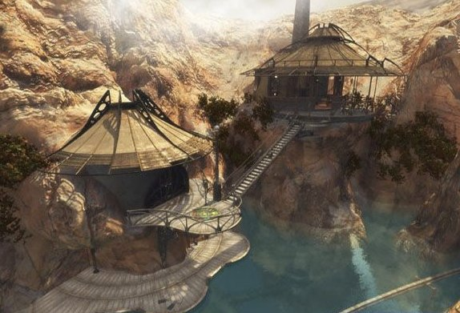
И если в Myst такими элементами были кружевные балки и округлые формы зданий и объектов окружения. То в Deus Ex такими объектами стали черные или золотые многоугольники в архитектуре, что в Праге, что в городе Големов и других локациях.
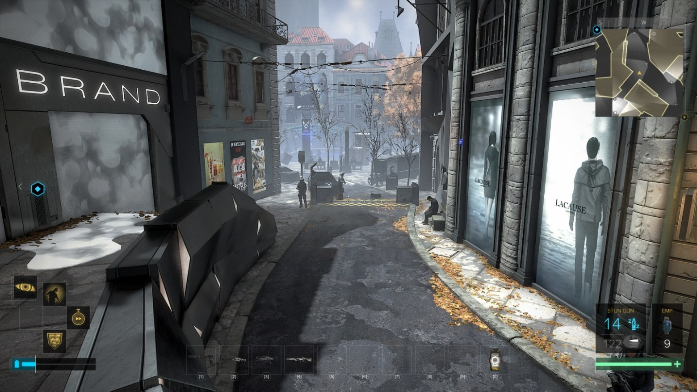
Еще черно-золотые полигоны:
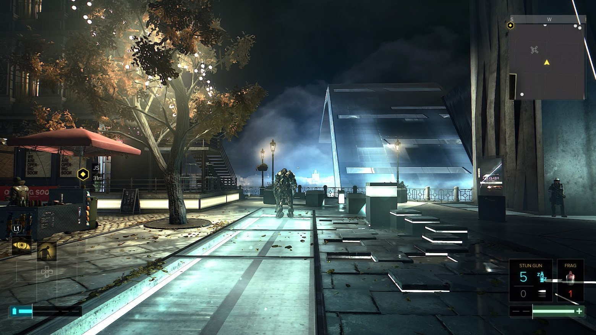
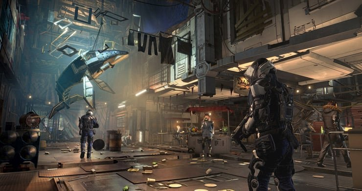
Můžete mi prosím říci, jak se dostanu do nejbližší kanceláře UNATCO? Ach jo, omlouvám se, otevře se až za 20 let.
Второй характерной чертой визуального стиля игры являются здания доминанты, на большинстве перекрестков расположены запоминающиеся сооружения или здания. Часть из них функциональны и могут использоваться для прыжков например, другие просто помогают навигации.
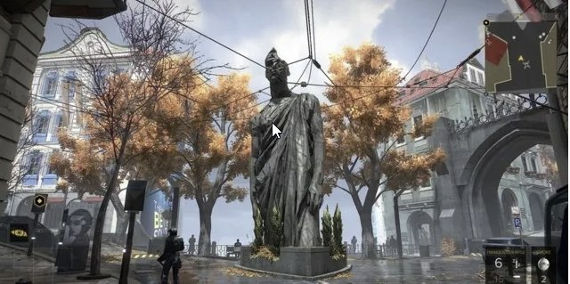
И еще:
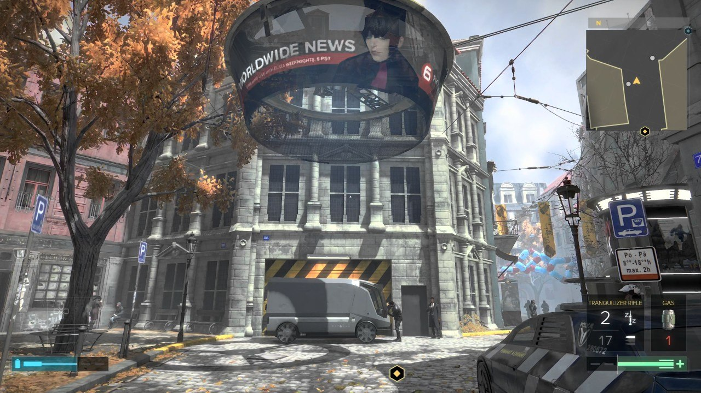
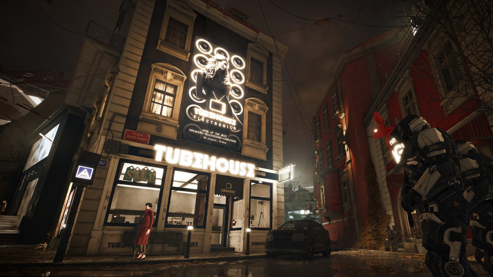
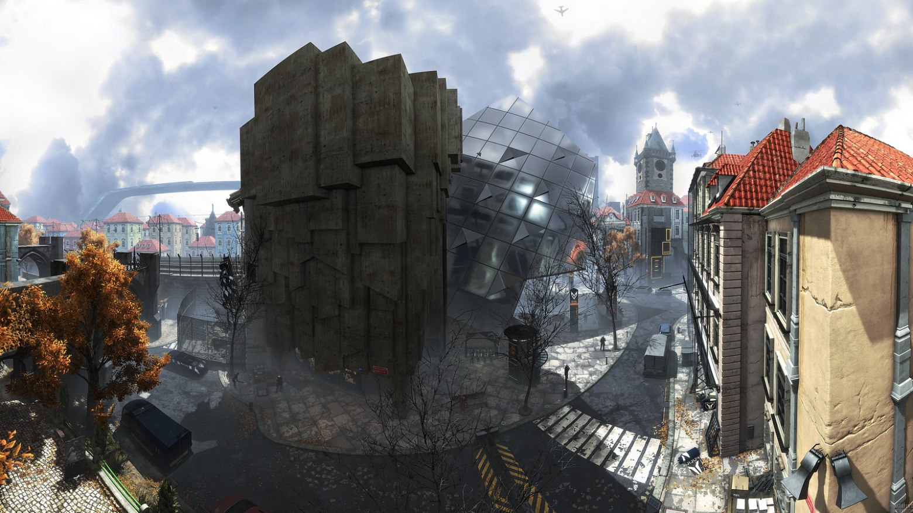
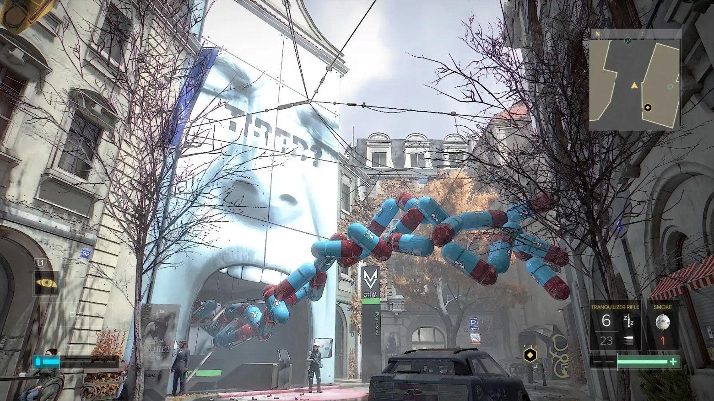
Внимание к деталям
Небольшие игровые локации, позволили дизайнерам уровней насытить их уникальными объектами-инсталляциями, а мощный движок сделал возможным показать их полностью как они были задуманы разработчиками. Но только сделали это спустя год в выпущенном director's cut для ПК, где добавили поддержку разрешения 4k и добавили новый уровень детализации объектов, не размениваясь на мыльные текстуры. Такого уровня детализации не всегда встретишь даже в недавно вышедших играх.
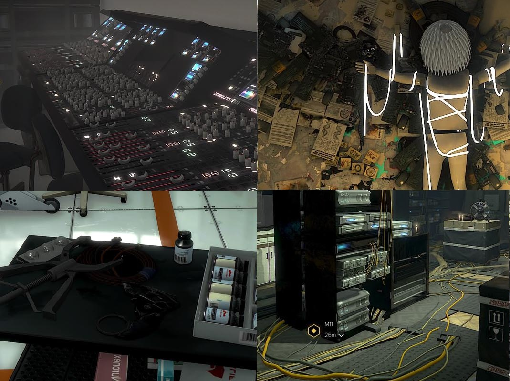
Такое внимание к деталям заметно и в отношении к NPC, граждане усердно тупят в телефоны, читают газеты или сидят за чашкой кофе и даже отпускают несюжетные реплики в сторону игрока, комментируя его действия, пока вы не выходите за рамки скриптов. Но вот воровать на глазах у владельца магазина разложенные вещи, тыкать ему в лицо пистолетом или бросаться предметами, все это заканчивается стандартным упал-покричал.
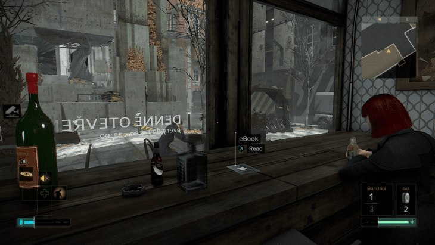
Toto pivo by bylo mnohem chutnější, kdyby tam bylo trošku nejropozitinu
Единственные, кто реагирует по другому на враждебные действия игрока — это полиция, но даже она склонна забывать через пару минут все совершенные преступления, невозмутимо прогуливаясь среди тел павших товарищей.
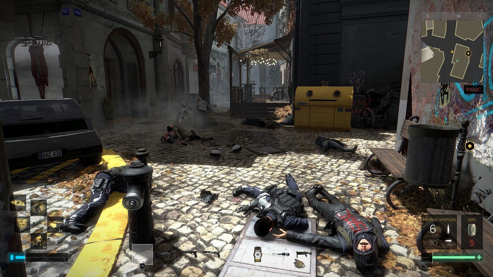
Dobrý den. Jmenuju se Adam Jensen, mužů zabít všechny v tomto městě. И еще:
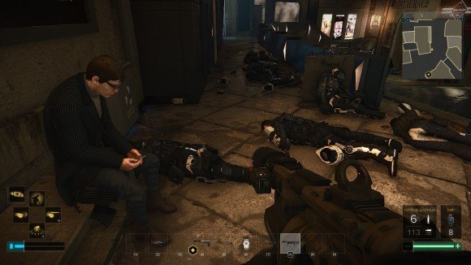
И это тоже внимание к деталям:
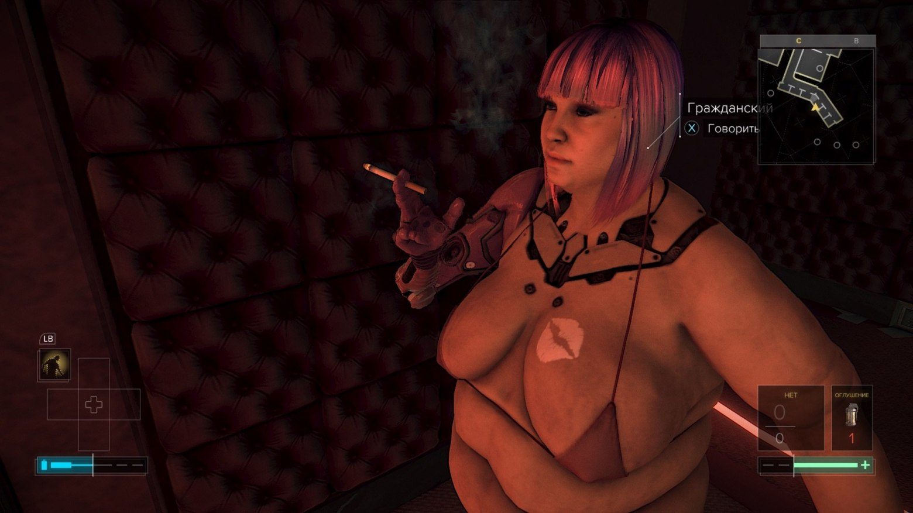
Máte ve vašem bordelu dívky s augmentacemi? Výborně, vezmu si obě dvě.
В свое время, когда вышла Human Revolution и позже MD, я получил удовольствие от обеих частей. Несмотря на затянувшийся период разработки первой части перезапуска, и если играть две части друг за другом, как одну игру, то она неплохо сочетает свободный стиль оригинального Deus Ex с устоявшимся на тот момент геймплеем консольных шутеров от первого лица. К сожалению, вышедшая в 2012 Dishonored, задрала планку вертикального изучения мира до небес и продемонстрировала гораздо лучшее понимание того, как реализовать концепцию свободной игры от первого лица. Но в Dishonored был другой уровень внимания к деталям, не такой концентрированный как разделение на «чистых» и «аугов». На протяжении всей игры frozen story встречаются на каждом шагу — вроде проверяющих документы полицейских на входе метро.
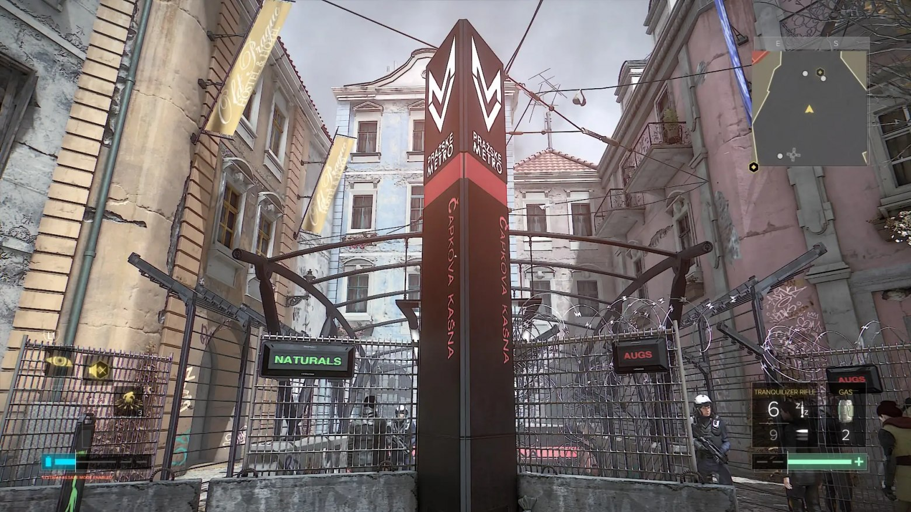
Или ресторанчика, который обслуживает только «чистых»:
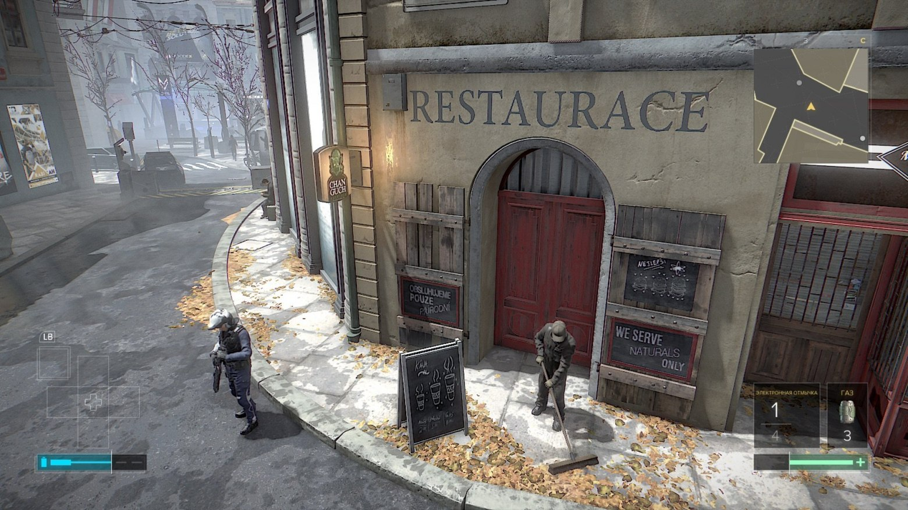
Není nutné nabízet mi elektronickou cigaretu. Kouřim skutečné.
Только NPC и их поведением внимание к деталям не ограничивается, так в помещениях можно задернуть шторы, причем если рядом будет стоять охранник, он пойдет проверить кто это сделал.
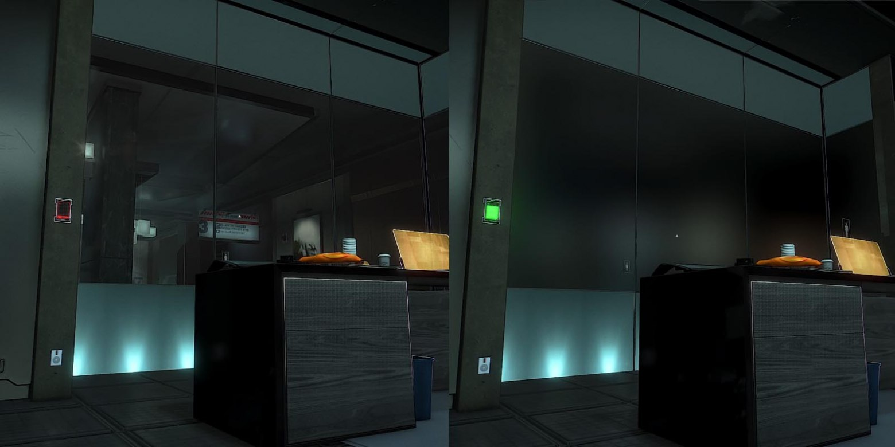
Относительно живой мир
А вот на чем разработчики действительно не стали экономить, так это на побочных квестах и реакциях окружения на действия игрока. Все побочные квесты собраны вручную, и не найдется два похожих. Не все они интересные, я часто замечал, что отдельные квесты сделаны с разными концовками, нелинейными путями выполнения и головоломками внутри, видно что старался как минимум крепкий мидл, да еще увлеченный игрой. И рядом абсолютно прямолинейный — дойди из точки А в точку Б, как будто собранный на коленке вчерашним джуном. Другое, что меня тогда поразило, это внимание к необязательным действиям игрока: так, если вы убьете владельца магазина или NPC в банке, то при следующем посещении магазин будет оцеплен, а в кабинете NPC будут стоять коробки с личными вещами. Если устраивать масакр в Праге, что при следующих визитах (а вернемся мы в город еще два раза), количество полиции будет больше, и докапываться они будут чаще, а еще сменят пистолеты на винтовки. В современных играх не особо заморачиваются с проработкой мелочей такого уровня, потому что для погружения они дают недостаточную отдачу на фокус тестах, а денег и времени на проработку требуют как параллельная ветка сюжета. Но с другой стороны, если не ломать об колено окружающий мир, то выглядит он очень и очень достойно.
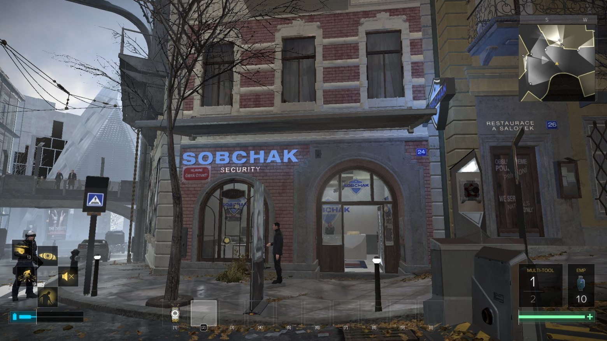
Издержки перезапуска
Самой непонятной механикой в HR для меня была нелепая энергия, восполняемая шоколадками, похоже получилось как обычно, простую механику оставили на конец проекта, а потом не смогли её подружить с тем, что надизайнили и оставили как было, не катить же. Тот факт, что лишь первая секция энергии восстанавливалась бесплатно после истощения, фактически заставлял игрока копить шоколадные батончики и никогда не использовать свои аугментации полностью, за исключением очень особых случаев. Но смысл игры как раз в использовании этих самых аугментаций, и получается, что одна недоработанная простая механика сломала все остальные, что от неё зависят. А ведь в трейлере показывают именно непрерывное использование способностей, без каких либо перерывов, а получилось — чтобы сделать как в ролике надо в процессе боя съесть пару батончиков.
Это и на старте выглядело ужасно спорным, а уж на фоне системы скилов и энергии в Dishonored, где использование способности временно уменьшало часть полоски энергии, которая затем начинала восстанавливаться — выглядело мягко сказать, недоработанной. Повторное использование способности до полного восстановления приводило к истощению оставшейся энергии, и Корво приходилось пить синюю бутылка для её пополнения. Это создавало хороший баланс между стоимостью длительного использования способностей и свободой их использовать для преодоления отдельных препятствий без лишних затрат, так что неудивительно, что Mankind Divided практически полностью переняла эту систему. Но можно и вообще почитить, включив бесконечную энергию и играть за супергероя, как наверное это и предполагалось первоначально.
Вариативность против сюжета
Создание уровней в играх такого жанра почти всегда строится с помощью различных вариантов прохождения и завершения или незавершения, и каждый из них накладывает определенные препятствия, загадки и врагов. У игрока всегда должна быть возможность попасть в любую часть уровня, с любым набором доступных умений, при этом не важно как и какие инструменты он для этого выберет. С одной стороны это дает большое число связанных локаций, каждую из которых можно настроить в рантайме в зависимости от выбранного игроком стиля прохождения, принеся в игру элементы рогалика и процедурной генерации. Но в реальности создание таких behavior base уровней, трудная задача даже для синьоров и лидов, имеющих за спиной шипнутые проекты. Кроме того, каждый альтернативный путь прохождения, по хорошему должен менять состояние всей системы после завершения. Но такое используют очень редко, опять же потому что для всех альтернативных прохождений надо прописать изменения в сюжете, но каждый из игроков увидит только один из 10 прописанных и не будет повторно проходить игру ради этих изменений.
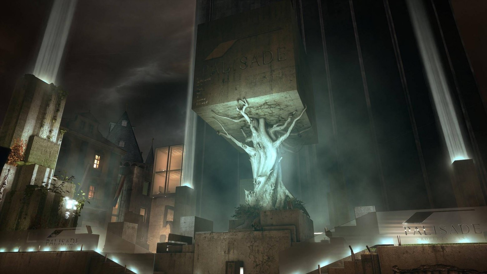
Víte, že ve sklepu kanceláře Praha Dovoz je vícepatrový komplex tajné organizace Task Force 29? Proč se smějete?
А если не прописывать изменения в сюжете, то игре прилетает клеймо рельсового шутера без вариативности, что для immersive sim, согласитесь, не очень идет. Так и получается, что слишком вариативной игру не дает делать наличие сюжета, а попытки расширить сюжет альтернативными путями выполнения заданий, приводят к его раздуванию и большим временным и инженерным затратам на реализацию, оценить которые способна очень небольшая группа игроков.
На вариативность прохождения уровней завязана и система навыков главного героя, я бы хотел сказать наоборот, но нет. Eсли вы посмотрите на то как размещены локации на уровнях, то увидите, что всегда есть только три пути, чтобы попасть в здания: силовой, стелс и способности (разбиваемые стены в основном). Но способностей ориентированных на проникновение гораздо больше, а мест применения им нет или почти нет, загазованные или электроловушки не в счет. Если стеклянное окно или дверь не разбивается скриптом, вы его ничем не повредите, ни пулей, ни гранатой, ни наноклинком.
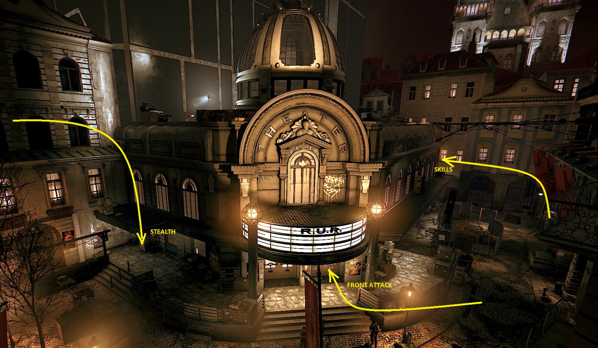
Однако осознание этого приходит ближе к середине игры, когда наигравшись со способностями начинаешь обращать внимание на мелочи, вроде искусственных заторов в узких местах или невидимых стен, которые не позволяют запрыгнуть на крышу или балкон. Это однако не мешает MD следовать идее оригинала: главный выбор, с которым вы сталкиваетесь, — какой маршрут вы собираетесь выбрать, а не сможете ли вы себе это позволить. При этом разработчики активно поощряют вертикальный gameplay, по всей Праге на крышах размещены локации для исследования. Причем только улицами, вертикальный gameplay не ограничивается, в высоких помещениях почти всегда будут подвесные потолки или конструкции для перемещения.
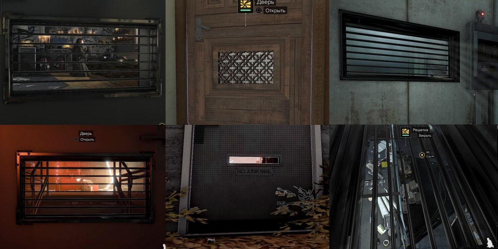
Альтернативные пути прохождения тоже всякий раз подчеркивают внимание к деталям: где-то спрятанным за холодильником проходом, где-то люком в потолке, но почти всегда по мере продвижения вы можете заглянуть в приоткрытый почтовый ящик, смотровое окошко или открыть решетку.
Свобода, стелс и последствия
Свобода выбора заканчивается там, где начинаются прозрачные стены. Признаюсь, что поначалу я был разочарован дизайном уровней в Mankind Divided во время первого прохождения, хотелось пройти по стелсу с минимум вредительства. Небольшой хаб Праги имеет на удивление много скрытых мест, которые было интересно исследовать, но все они по итогу оказались маленькими, незначительными и не добавляли ничего существенного в сюжет, разве что кроме частей для сборки предметов. При этом многие сюжетные области, вроде банка, казино или театра доступны сразу, без каких-либо ограничений. Серьезно, игра подстраивается под выбор игрока насколько это возможно, так например оказалось, что можно устранять сюжетно важных персонажей (не всех конечно), и это был неожиданный опыт. В начале сюжета, после подслушанного разговор между боссом мафии и его лейтенантом можно этого самого босса и уложить, вообще удивительно, что игра позволила это сделать.
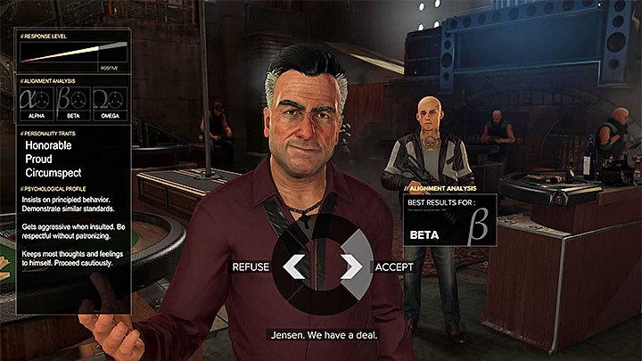
И когда пришлось вернуться туда по сюжету позже, он так и оставался мертвым, а вся нужная информация была в его компьютере. Как потом оказалось я лишил себя парочки интересных побочных заданий. Это небольшой пример, но мне понравилось, насколько органично такая реакция на действия игрока встроена в игру. А еще я привык за последнее время к тому, что игры явно показывают, что я могу и чего не могу делать. И пусть это не самый значимый игровой персонаж, но он существует в игре задолго до того, как сюжет потребует его появления, и он там что-то делает, ходит без защиты из пуленепробиваемого стекла, так любимого большинством AAA-игр, а теперь подумайте сколько игроков вообще до него не добрались. В стиме процент завершения линейки квестов с этим персонажем меньше 30%.
А еще Прага сильно ассоциировалась с City 17 из второй халфы, эдакая очень депрессивная область, золотой век человечества закончился: мусор, полиция и ауги-бомжи — основной способ игры передать это. Ребята явно оглядывались на него как по внешнему виду, так и по атмосфере. И знаете, это цепляет, как минимум для меня атмосфера умирающего города стала одним из крючков игрового дизайна.
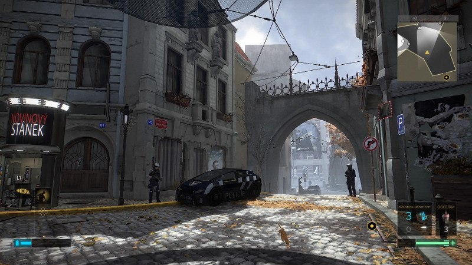
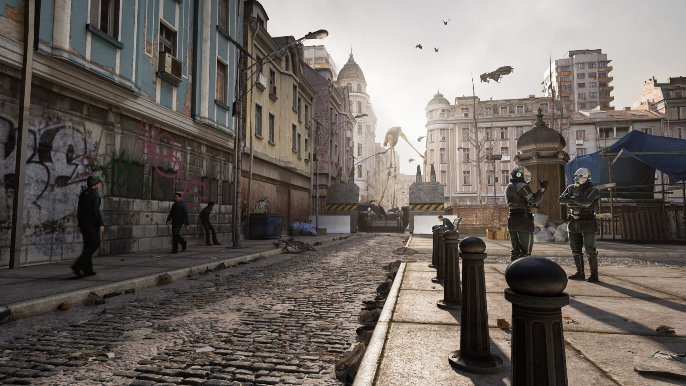
Похоже, не правда ли? Иногда мне казалось, что даже графити похожие были.
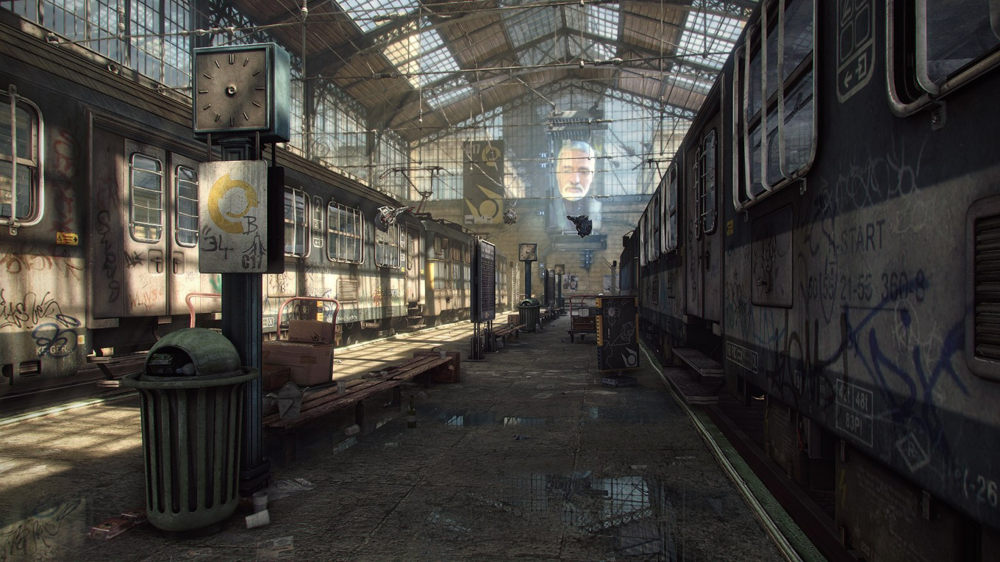
Deus Ex: Prague edition
Даже при том, что игра не использует весь потенциал игрового движка, на момент выхода она выглядела красиво и технологично. А наличие интересного, запоминающегося визуально и атмосферой мира со своим лором, который подкреплен историями и игровым окружением затягивает. Игра поощряет игроков за исследование и любопытство информацией и предметами. А высокая плотность игровых событий на локациях такого небольшого размера и главное умение разработчиков сделать этот небольшой мирок интересным ставит игру в один ряд с более крупными и масштабными проектами.
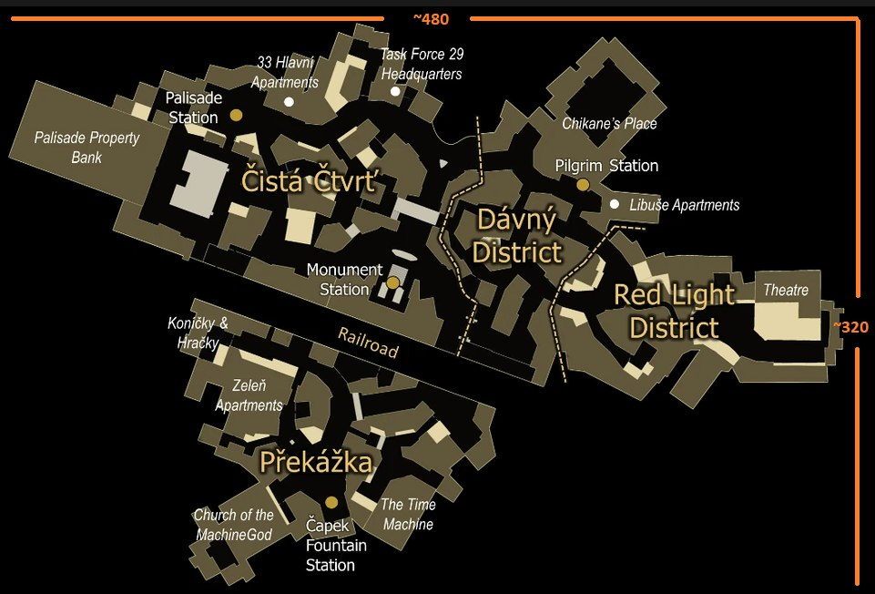
← Все статьи